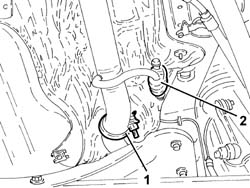
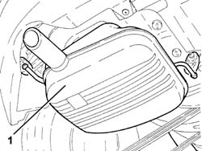
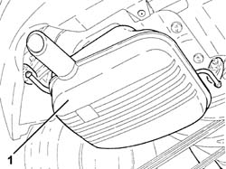
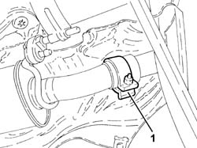
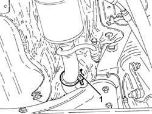
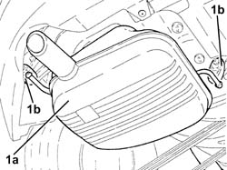

1076B22 rear exhaust silencer - r+r emission control versions
- Path
- Procedures > 10 ENGINE > 1076 EXHAUST PIPES AND SILENCERS > 1076B exhaust pipes and silencers > 1076B22 rear exhaust silencer - r+r emission control versions
- Kind
- repair procedure (removal / refitting; the operation number is the code)
- Applies to
- engines: 1.6 TS, 2.0 TS, 3.2 V6; all production periods
- Interactive page
- https://sloeber94.github.io/elrnDB-a147/en/#/3024865
Applies to: engines: 1.6 TS; all production periods; only with equipment: 103 CV
 Removing
Removing
 Refitting
RefittingPosition the vehicle on the ramp.
1. Loosen the collar fixing the intermediate exhaust silencer to the rear exhaust silencer.
2. Release the intermediate exhaust silencer from the rear flexible mounting.

Applies to: engines: 1.6 TS; all production periods; only with equipment: 103 CV
1. Remove the rear exhaust silencer after having released it from the flexible mountings and from the intermediate exhaust silencer.

Applies to: engines: 1.6 TS; all production periods; only with equipment: 103 CV
Refitting
RemovingPlace the rear exhaust silencer back in its housing and connect it to the intermediate exhaust silencer.
Fasten the rear exhaust silencer using the rear flexible mountings.
Fasten the intermediate exhaust silencer to the rear flexible mounting.
Tighten the collar fixing the intermediate exhaust silencer to the rear xhaust silencer.
Remove the car from the ramp.
Applies to: engines: 1.6 TS; all production periods; only with equipment: 120 CV
Removing
RefittingPosition the vehicle on the ramp.
1. Loosen the collar fixing the intermediate exhaust silencer to the rear exhaust silencer.

Applies to: engines: 1.6 TS; all production periods; only with equipment: 120 CV
1. Remove the rear exhaust silencer after having released it from the flexible mountings and from the intermediate exhaust silencer.

Applies to: engines: 1.6 TS; all production periods; only with equipment: 120 CV
Refitting
RemovingPlace the rear exhaust silencer back in its housing, connect it to the intermediate exhaust silencer and fasten it using the flexible mountings.
Tighten the collar fixing the intermediate exhaust silencer to the rear exhaust silencer.
Remove the car from the ramp.
Applies to: engines: 2.0 TS; all production periods
Removing
RefittingPosition the vehicle on the ramp.
1. Loosen the collar fixing the intermediate exhaust silencer to the rear exhaust silencer.

Applies to: engines: 2.0 TS; all production periods
1. Remove the rear exhaust silencer after having released it from the flexible mountings and from the intermediate exhaust silencer.
Applies to: engines: 2.0 TS; all production periods
Refitting
RemovingPlace the rear exhaust silencer back in its housing, connect it to the intermediate exhaust silencer and secure it using the flexible mountings.
Tighten the collar fixing the intermediate exhaust silencer to the rear exhaust silencer.
Remove the car from the ramp.
Applies to: engines: 3.2 V6; all production periods
Removing
RefittingPosition the vehicle on the ramp.
1. Loosen the collar fixing the rear exhaust silencer to the intermediate exhaust silencer.

Applies to: engines: 3.2 V6; all production periods
1. Remove the rear exhaust silencer (1a) after releasing it from the flexible supports (1b) and from the intermediate exhaust silencer.

Applies to: engines: 3.2 V6; all production periods
Refitting
RemovingPlace the rear exhaust silencer back in its housing, connect it to the intermediate exhaust silencer and secure it using the flexible mountings.
Tighten the collar fixing the intermediate exhaust silencer to the rear xhaust silencer.
Remove the car from the ramps.
Topics that link to this page (8)
- S05 ENGINE HISSING
- S11 ENGINE'BUZZING
- 1040A10 fuel tank - r + r and decant fuel
- 1040A14 fuel tank - r + r for replacement
- 1040B30 fuel delivery line - r r
- 1080E60 pipe from fuel vapour separator to activated carbon filter - r r
- 3340B67 rh brake connection pipe - r r
- 3340B69 rhp brake connection pipe - r r